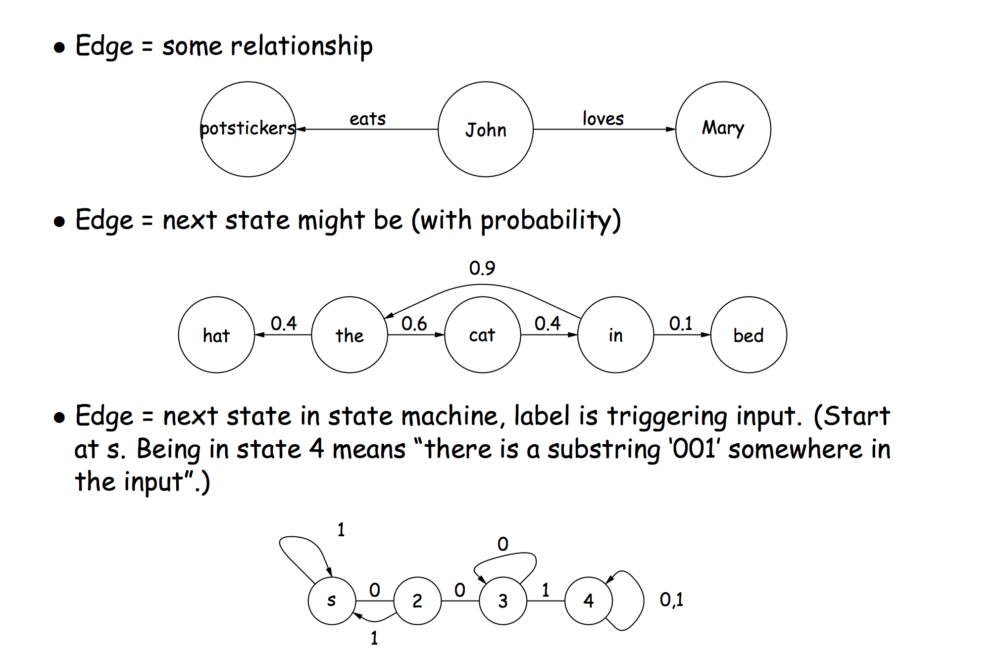
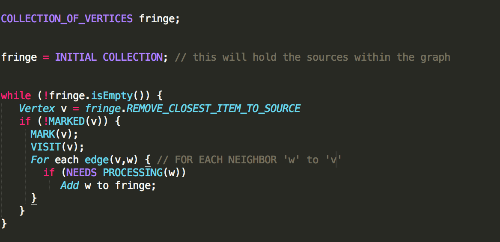
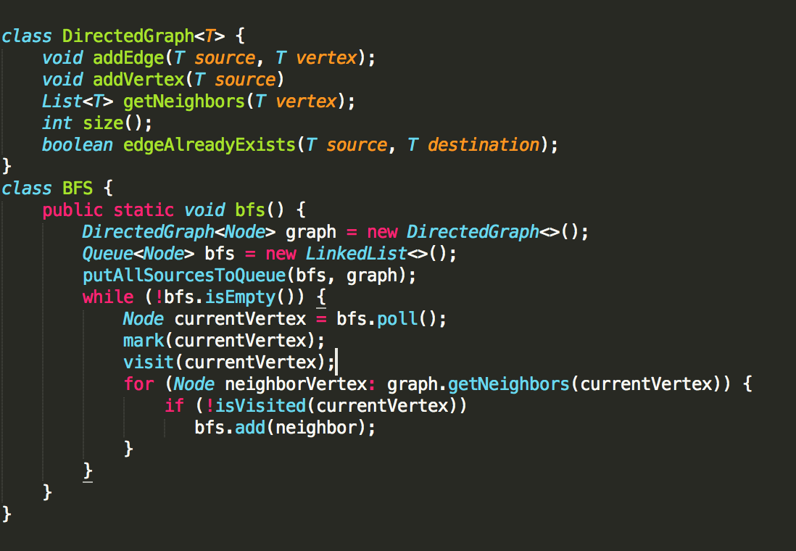
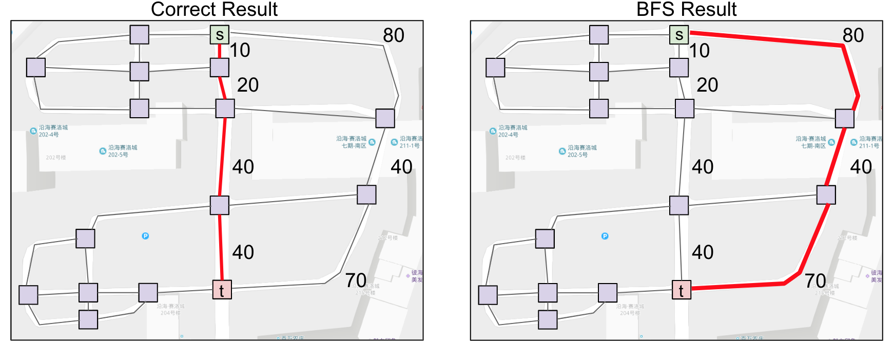
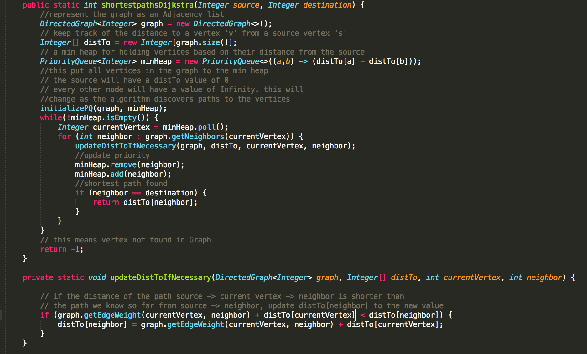
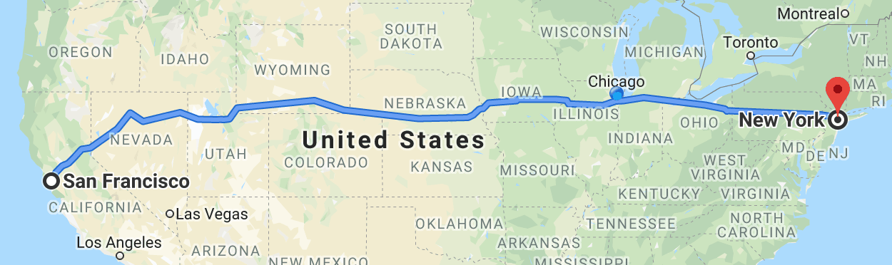
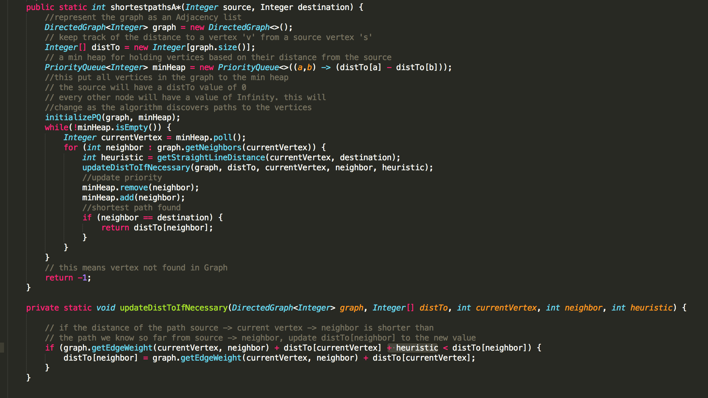

Algorithms
Bipartite matching, Network flow algorithms
Bipartite matching
Graphs are used to express non-hierarchically related items. They can represent networks such as pipelines & roads, processes such as Markov chains or some sort of partial ordering such as makefiles.
A common operation peformed on graphs is finding the shortest path between vertices in a graph. Depending on the relationship that the edges in the graph represent, the shortest path of a graph can provide meaningful insights. For example, for a graph that represents a network of roads, the edges represent roads that connect intersections. If each edge has a weight that represents the length of each road, then the shortest path in this context refers to the shortest distance to get from one intersection to another. On the other hand, if the weight of each edge represents the time it takes to get from one intersection to an adjacent intersection, then the shortest path in this context will be the quickest path to take to get from one intersection to antoher.
Regardless of what the graph represents, the algorithm for finding the shortest path is the same. Here's a psuedocode of an algorithm that finds the shortest path in any graph:
The goal is to traverse the graph in order of each vertex's 'closeness' to the source. The 'fringe' data structure in the picture above needs to support operations for finding the closest of the visited vertices.
In an unweighted graph, 'closeness' is just the number of levels a vertex 'v' is from the source. So when traversing the graph starting from a source, every vertex that is an edge away from the source is put into the collection above. There is no other vertex closer to the source than these vertices. So it looks like the vertices that are encountered first while traversing the graph are the closest. So really, the ideal collection would be one that supports a first in first out kind of operation which is a queue. This algorithm is called Breadth-first search(BFS).
Here's code which implements BFS:
Now if the graph is a weighted graph, it is not enough to define 'closeness' as just the number of edges a vertex sits from the source. This is because each edge has a weight that determines how far a vertex is from a source.
Instead, the 'closesness' is more accurately defined as the sum of weights along the path that leads to a vertex from the source. So in this case, the first set of vertices encountered will not neccessarily be the closest. There could be vertices farther away from the source whose sum of weights is smaller than vertices that are closer to the source. So, as we traverse the graph, we might discover new paths to an already visisted vertex, and this path may be closer to the source.
The 'fringe' data structure defined in the psuedocode above needs to be one that supports operations for efficiently prioritizing vertices with the smallest sum of weights from the source. So at any point, the fringe needs to be able to return the vertex with the smallest weight. The ideal data structure for this is a priority queue where the priority of the elements is determined based on how close they are to the source at any point. These values may change as new vertices and new paths to already discovered vertices are found, but regardless, the priority queue will efficiently keep track of the closest vertex. This version of the shortest path algorithm is known as Dijkstra's Algorithm.
With both algorithms, not only do you get paths, but the paths are also guaranteed to be the shortest. So, in addition to determining connectivity between nodes, the algorithms also provide the shortest distance between nodes.
However, this instrinsic characterstic of these two algorithms, which is the fact that they explore every closest node first before progressing to explore farther, can be a detterent in areas such as navigation.
For example, say you want to find the shortest path from San Franciso to New York
If you use Dijkstra to find the shortest path, it will first explore places closest to San Fransico first. It will even explore points that are on the pacific ocean first despite the fact that is clearly not the right path to take.
To address this, we can make a minor change to how "closeness" is defined in Dijkstra. Instead of just defining closeness as the sum of weights along a path from the source, a third variable, known as a heuristic, can be added to that value in order to guide the algorithm.
This heuristic can be the straight line distance from the current vertex to the destination. Because of this added variable to the definition of closeness, vertices further to the left of San Francisco will not appear to be as close to the source. So, this version of the shortest path algorithm will explore areas more towords the target. This slight variation of Dijkstra's algorithm is called the A* algorithm.
